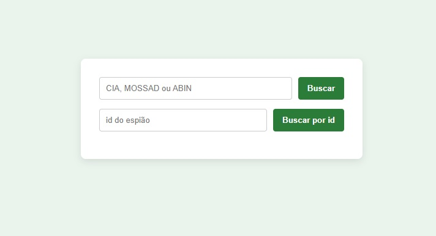

Exercício 07 — Faça você mesmo: Mini aplicação Full Stack
A lista de exercícios está logo abaixo
A aplicação full stack da última aula já está pronta! Agora você deve realizar algumas edições nela, seguindo os exercícios abaixo.
Baixe o projeto para treinar:
📦 agencia.zip
Já vem com as pastas organizadas e arquivos necessários.
Você pode conferir o gabarito da aula aqui:
📦 agencia_gabarito.zip
Baixar gabarito (.zip)Exercícios Práticos
Realize os exercícios abaixo em ordem crescente de dificuldade:
1. Acrescentar o nome real ao resumo
A consulta de resumo passa a mostrar nome_espiao | nome_real | agencia | missao.
- O aluno acrescenta
e.nome_real AS nomeRealna consulta nativa,String getNomeReal();na interfaceEspiaoResumoe ajusta aStringmontada no controller. - Só mexe em arquivos que já existem, e o padrão é o da coluna
nomeEspiao.
2. Tratar o NULL do codinome
No schema, nome_espiao aceita NULL, assim como id_missao. Alguns espiões podem não ter codinome, e o resumo deve mostrar "sem codinome".
- Copie a lógica da missão: o operador ternário
== null ? "..." : ...no controller (ou o tratamento direto no front-end comif). - Para testar, faça um
INSERTde um espião comnome_espiaonulo no banco de dados.
3. Nova busca: espiões de uma missão
Crie um endpoint /espioes/missao?nome=Operação Sombra que devolve os espiões daquela missão.
- O modelo de referência é a busca por agência: utilize
@Queryem JPQL comJOIN FETCH e.missao m WHERE m.nomeMissao = :nomeMissao,@Param,@RequestParame@GetMapping. - Pode ser testado diretamente na barra do navegador.
4. Novo formulário
Crie um novo formulário para listar as missões, que criamos no exercício 3.
- Veja as funções async que já estão no front end para buscar e exibir as missões.
5. Front-end de qualidade!
Neste momento, o front-end... não existe! Vamos melhorar isso
- Centralize os formulários em um div
- Aplicar uma cor de fundo, sombreamento e bordas
- Utilize CSS para melhorar a aparência e a usabilidade
- Applicar efeitos de hover

Extraia o .zip em uma pasta no seu computador (Área de Trabalho, por exemplo) e abra
essa pasta no VS Code (Arquivo → Abrir Pasta...).
Lembre-se: de baixar as extensões no VsCode: Extension Java Pack (EJP), Database Client (DC).
Lembre-se: É preciso configurar o arquivo properties do Spring Boot para colocar a senha do banco de dados
Lembre-se: É preciso configurar o Database Client colocando a senha do banco de dados (também).
Se as extensões estiverem corretas, o EJP fará imports automáticos, ajudará com a sintaxe, etc. e o DC facilitará as consultas no MySQL, permitindo que sejam feitas direta pelo VS Code.